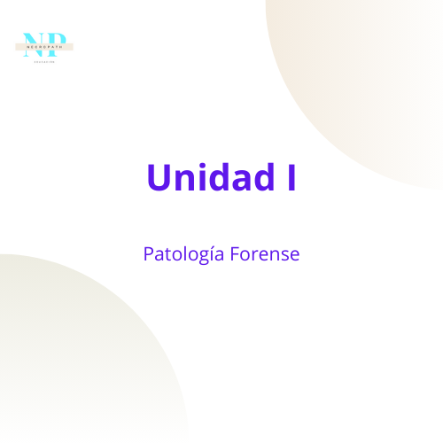
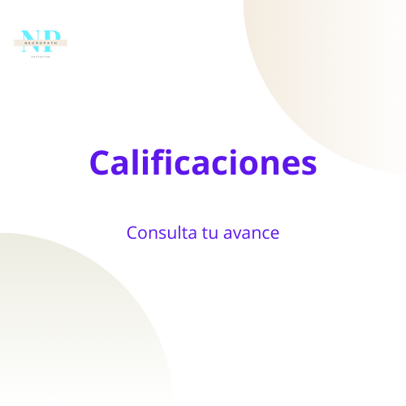

Inicio

Aprende los procedimientos técnico-científicos, necesarios para realizar una Necropsia Médico Legal.
Empezar
Identifica los metodos anatomo patológicos de una autópsia.
Empezar
Explora y describe las causas básicas de muerte.
Empezar

Conoce el desarrollo de tus actividades en la aplicación.
Ver Resultados